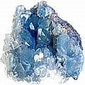

Minha melhor cura pessoal para dor de dente
Enxagues com salmoura morna & pacotes de sal
"...vergonha para todo o mundo médico, por não divulgar um analgésico tão simples.” (de um comentário recebido por CuraDente)
Como me livrei de quase todas as dores de dentes, até mesmo de dor grave, intensa ou pungente.
Esse procedimento simples para alívio de dor de dente (por favor não o descarte por ser demasiadamente simples – eu o fiz, de início) em verdade operou milagres para mim e muitos outros, até mesmo com dor de dente do pior tipo imaginável. Em verdade, certa vez tive uma dor de dente tão terrível e extrema que me pôs em estado de choque por um momento, foi como relâmpago cauterizando minha mandíbula e além dela. Essa dor originava-se de uma cavidade que atingia a raiz, como então me disse a dentista, quando usava a broca. Porém disse-lhe para parar de furar (ela planejava um tratamento de canal, um dos mais nocivos tratamentos convencionais, a meu ver; veja a informação vasta sobre tratamento de canal, à disposição). (Depois tratei o dente comido pela cárie, eu próprio, usando a abordagem traçada nas páginas de CuraDente sobre Nutrição e Cuidados Orais & Higiene Bucal, que parece ter ajudado a reconstruir algum esmalte dentário [ao menos funcional]. Embora aquele dente não tenha se recuperado, ele nunca mais me trouxe algum problema.)
Nota importante: esteja ciente de que em certas situações, a água salgada pode ser ineficaz (explicado em Quando a água salgada não funcionou). Em casos muito raros (conheço apenas dois, no total), a água salgada aumentou a dor (causas desconhecidas, saiba mais em Uma nota sobre dentes rachados/quebrados). Também, se você habitualmente usa uma dieta de pouco sal ou tem uma conhecida ou suspeitada sensibilidade ao sal, poderá querer usar outros analgésicos (como alho, etc.).
Como preparar o enxague com água salgada
Dissolva sal suficiente (também veja Que sal? e Que concentração de sal?) em água fria ou (provavelmente melhor, mais suave e possivelmente mais eficiente) água morna (temperatura do corpo) para preparar uma solução forte (se quiser ir devagar, comece com uma solução fraca). Enxágue sua boca repetidamente, vigorosamente jogando a água salgada por toda a boca (se a dor permitir) ou apenas deixando que a salmoura atue em sua boca (isso o fará salivar). A dor de dente, especialmente quando extremamente severa, poderá instantaneamente diminuir ou talvez levar algum tempo antes de desaparecer, mas fá-lo-á. (Certamente assim ocorreu comigo toda vez que a usei, o maior tempo que levou para parar dor aguda foi cerca de dois minutos. Também tenho visto outros relatarem alívio quase instantâneo de dor dental, de forma idêntica; compare Testemunhos de alívio de dor de dente com água salgada. Às vezes poderá ocorrer um curto surto inicial na sensação de dor). A repetição do enxague com sal – até mesmo durante vários dias, em caso de a dor reaparecer ou não desaparecer por complete – poderá ser necessária. Pode-se também alojar alguns cristais de sal diretamente sobre o dente ou na área dolorida da gengiva. Para os melhores resultados, não enxague com água em seguida (sobre as razões ver Por que a dor de dente pode ser tão insuportável: mais perspectivas sobre causas de dores nos dentes e gengivas [por que e como a solução com água salgada morna pode atuar & curar dor de dente]).
Descobri ser esse tratamento com salmoura mais eficaz que com óleo de melaleuca (que para mim foi extremamente útil para dores menos agudas e que poderei aplicar depois para conservar minha boca e dentes “esterilizados”), como também na maior parte das ocasiões, mais útil que qualquer outra coisa que tentei, como analgésicos alopáticos [ver allopathical painkillers em inglês] (embora esses analgésicos tenham sua utilização [ocasional], e o velho largamente recomendado remédio para dor de dente, o extrato de cravo da índia (ou óleo de cravo para cozinha, um remédio que se compra em prateleira e que se mostrou inútil no meu caso, para dor grave).
(Óbvio e a propósito, se partículas de alimentos presas entre os dentes são a causa de dor de dente, ao esparrinhar completamente a água salgada ao redor da boca, na maneira descrita acima, deverá ajudar a desalojar as partículas presas. De outro modo, o uso do fio dental ou de palitos pode ajudar.)
Qual o melhor sal a usar para dores de dente?
Uso sal marinho cinza, sempre que disponível e que, em contraste com o sal de mesa refinado, preserva uma exuberância de minerais naturais e oligoelementos. Também, quando enxaguo meus dentes com sal refinado na forte solução acima descrita, ele, em verdade, deixa um gosto “venenoso” em minha boca, enquanto que o sal marinho não refinado não cria esse efeito de gosto desagradável. O sal cinzento não refinado está disponível aqui na Alemanha em lojas de produtos naturais, onde o compro em sacos de 1 kg (pode-se também compra-lo online e com um pouco de sorte obter excelentes negociações, especialmente ao comprar no atacado [sal e bicarbonato de sódio combinam para prover um excelente banho desintoxicante, por exemplo]). Esse é também o único sal que uso para temperar alimentos. Embora haja também o chamado sal marinho integral disponível, que é branco como neve e finalmente moído como o sal de mesa normal, não estou certa de que esse último é tão rico em minerais e oligoelementos como o sal cinzento. (Penso que o sal marinho não refinado é também vendido como “sal marinho celta” nos EUA e outros países.) Se você usar sal refinado, certifique-se de que não contém alumínio, ao menos se o usa com frequência.1 Até mesmo sal de ervas, etc. deverá funcionar da mesma forma, se o sal comum não estiver disponível.
Atualização em 2008: comprei a preço favorável sal no atacado, retirado de depósitos (que estiveram anteriormente no mar) com milhões de anos de idade, que é branco como a neve mas que deve ser até melhor, já que deve ser livre de contaminantes.
Qual a melhor concentração de sal?
Frequentemente não importa muito (exceções – compare Aumentando a concentração e duração da aplicação) desde que o faça salivar, mostrando que água/fluido é retirada de suas gengivas, etc. Aparentemente uma concentração de 3-5% de sal seria natural, já que ela corresponde à concentração de sal encontrada em nossos oceanos. Li que a mais alta concentração de sal na água é 26%, o que poderá rapidamente provocar uma sensação cáustica na mucosa da boca. Uma concentração/solução salina fisiológica (como encontrada no próprio corpo humano) seria de 0,9%. Assim, se você tiver inclinação para a ciência (mesmo com dor de dente), poderá querer experimentar com qualquer coisa entre 0,9% e 26%.
Pequenas variações do remédio com água salgada para dentes sob um “ataque frio”.
Para dentes que são atingidos com um “ataque frio”, i.e. que se tornam extremamente doloridos em razão da sensitividade do nervo após comer ou beber comidas frias: experimente acrescentar à solução salina um pouquinho de álcool (não de bebidas) e enxague a boca. A água não deve estar nem fria nem quente, mas morna.
Acrescentando desinfetantes de ervas à água salgada
Quando (o que frequentemente ocorre) a dor de dente se deve a uma infecção profunda (do nervo/polpa) do dente, você poderá se beneficiar mais acrescentando qualquer das muitas plantas com poder anti-infeccioso ou seus extratos (veja Remédios naturais para dor de dente: ervas e plantas, para muitas sugestões).
Quando a água salgada não ajudou
O tempo mais longo que me levou para ter alívio de dor de dente com água salgada (mais de dois dias) foi quando a dor se originava numa área coberta por uma ponte. Faz sentido que a água salgada levasse mais tempo para atuar em tal local, já que a maior parte da área estava impenetravelmente coberta por um “selante” artificial (que hesitei remover por longo tempo já que eu me ressentia em ter de pagar outra pequena fortuna pelo trabalho de alguns minutos de um dentista) (ver Riscos de pontes dentárias para saber o porquê de agora eu saber ser isso um grande erro).
Um caso semelhante refere-se a um amigo que o tentou sobre uma intensa dor de dente/gengiva, na área de um dente tampado e tratado no canal. Não funcionou durante vários dias, levando a crer que os micro-organismos envolvidos haviam desenvolvido imunidade ao efeito “esterilizante” da solução salina, ou também que a água salgada simplesmente não atingiu a área.
O que finalmente o ajudou foram simples pílulas analgésicas de farmácia [compare em inglês painkilling tablets], com metade da pílula aplicada topicamente e a outra metade tomada internamente, enquanto que depois enxaguou sua boca com água e óleo de melaleuca e aplicou algumas gotas desse óleo diretamente no local (ele jejuava durante quase toda a provação, já que a sensibilidade e dor do dente/gengiva não lhe permitia ingerir alimentos). O estado indolor assim atingido ajudou-o a dormir bem (muito importante para que o corpo se cure e se desintoxique), com um abcesso formado no dia seguinte, que (juntamente com a dor) gradualmente recuou enquanto ele voltou a enxaguar ocasionalmente e assim drenar o abcesso com água salgada. Ele nunca necessitou de um dentista.
Importante para aqueles que “já conhecem” o uso da água salgada:
Tente aumentar a concentração e duração da aplicação
Como comentou um visitante do site: "Já conhecia o enxague com água salgada, mas nunca o havia experimentado com concentração tão alta ou exposição duradoura. Certa vez eu estava praticamente me enroscando em agonia e em seguida senti-me melhor que nunca. Muito grato." Esse testemunho mostra quanto poderosa pode ser a água salgada em aplicação mais concentrada e duração mais longa! Também compare testemunhos de alívio de dor de dente, com água salgada.
Comumente não sei se a água salgada funciona para dor oriunda de canais dentários (i.e. dentes mortos) mas sugiro que vale muito a pena, tentar.
Testemunhos de alívio de dor de dente com água salgada
...parecem abundar, até mesmo muitos dramáticos, incluindo aqueles que tentaram coisas “mais sensíveis” de início, como rebentar um tilenol e outros analgésicos convencionais3, usando enxaguatório e escovando seus dentes, até mesmo pacotes de gelo e aplicações de calor. Às vezes eles combinavam água salgada com outras aplicações, como Listerine [link em inglês].
Eis aqui um exemplo de testemunho: "Bombeei ibuprofen e vicoden durante 30 minutos de lágrimas e gemido e um pacote de gelo e desespero sobre dor incapacitante em minha boca. Encontrei alguns momentos para pesquisar no Google por ajuda e fui levado a VOCÊ… Um pouco de água morna e sal de mesa e bochecho forte por cima e em volta dos dentes e a dor totalmente incapacitante se foi... Tenho 40 anos de idade e não daquelas pessoas que não aguentam dor… se tivessem me oferecido cortar um dedo, em troca de tirar a dor da boca, eu teria oferecido a faca de açougueiro... era tão grave assim. Se não houvesse encontrado você, estava REALMENTE pronto para chamar uma ambulância. [...] algo tão simples [...] é uma vergonha para todo o mundo médico não divulgar um analgésico tão simples.”
E seis mais se expressaram assim:
"... um salva-vidas, nunca acreditei quando as pessoas me disseram para usar água salgada para dor de dente, mas seus comentários me convenceram, minha dor era tão forte, eu vinha sofrendo de dor de dente tão gravemente que não podia parar de chorar e não podia dormir, usei o seu remédio e após dois minutos comecei a ver resultados; ela não passou completamente mas a aplicação ajudou a torná-la suportável o suficiente para que eu pudesse ao menos dormir e nunca havia sido tão grato a alguém antes.”
"Quebrei meu dente... fui ao pronto socorro e lá basicamente me deram alta e me deram alguns analgésicos baratos. Minha amiga me deu algumas de suas pílulas analgésicas mais fortes. Nada funcionou. Não pude dormir nem comer durante 2 dias. Estava com tanta dor que estava, em verdade, chorando. Meu marido encontrou seu site e me disse para tentar o sal... salvou o meu fim de semana e minha sanidade. Funcionou imediatamente. A dor se foi instantaneamente e não voltou mais até agora. Não sinto dor por 12 horas e estou tão feliz.” (Também veja acima, Importante para aqueles que “já conhecem” a água salgada...)
"...não tenho palavras para agradecer. Vinha sofrendo de dor extrema de dente e da mandíbula durante uma semana (e periodicamente, durante anos, usei ibuprofen e co-codamol como doces). Chegou a ponto em que nada ajudava e durante a noite passada, insone, encontrei seu website.
Também pensei que a água salgada parecia fácil demais, mas na minha primeira aplicação, alívio imediato!
Tive o melhor sono noturno e agora, 12 horas depois, sem nenhuma pílula rebentada, sinto-me como uma pessoa diferente (sem dor).
Como pode você agradecer a alguém que conseguiu parar a pior das dores – e eu tinha tido 2 crianças – suficiente... a luz no fim de um túnel muito escuro.”
"...não havia visitado o dentista por 16 anos... e surgiu uma dor a ponto de quase desmaiar...tentei essa técnica com água salgada e repeti a aplicação em intervalos de aproximadamente 3 semanas. Agora, quatro meses depois os dois dentes em questão não doem.” (traduzido do alemão por CuraDente)
"...toda manhã eu sentia uma GRAVÍSSIMA dor, de um dente com dor horrível...apliquei a técnica da água salgada e funcionou imediatamente! Durante toda a manhã experimentei advil...tentei por uma toalha quente sobre o rosto...tentei usar uma bandeja com gelo sobre minha face! Até mesmo meditei! Nunca medito! E tudo o que foi necessário foi alguma desagradável água com sal. Mas, não importa, funcionou.”
"...um salva-vidas. Meus últimos dentes do siso estavam me matando, ao crescerem. Eu estava tomando fortes analgésicos que demoravam para fazer efeito, deixavam-se apático e sonolento e me faziam doer o estômago.
Estava céptico, porque usar sal para aliviar dor? Parece contraditório mas eu queria tentar qualquer coisa. Não posso lhe agradecer o suficiente, o tratamento com sal está funcionando muito bem e levo uma pequena garrafa térmica da solução salina comigo quando vou ao trabalho, de sorte que posso retornar ao emprego!” (Esse testemunho é interessante porque mostra como a água salgada pode até ajudar com a dor de dentes sisos em crescimento.)
...e também tem funcionado para falantes de português :-) (quase todos os outros testemunhos foram traduzidos do inglês):
"...preciso dizer que sou (será que ainda sou?) completamente caótico quanto ao uso de 'remédios caseiros' (inclusive, costumo usar esse termo entre aspas mesmo, tamanha é minha descrença sobre sua eficácia). Mas, especificamente no caso da sugestão apontada no seu site sobre o tratamento da dor de dente com sal (confesso que quando busquei no Google por 'melhor remédio para dor de dente' cheguei a rir dessa dica. Sal????? kkkkkkkkkkk) e depois de ter tomado Paracetamol e Dipirona por 5 dias, além de ter feito compressa quente, 'apelei' pro Doutor Google...
E qual foi minha surpresa quando aquela maldita dor de dente, que me acompanhava havia uns 7 dias, simplesmente SUMIU em questão de minutos após o enxágue com água salgada!!! Nenhuma dor é agradável (e olha que já tive crise renal), mas ninguém merece sentir dor de dente, viu... (na verdade, a Dilma e o Lula merecem, sim... rsrsrs). ... agradeço-lhe pela dica, que, doravante, levarei comigo e a disseminarei, certamente."
"Se eu pudesse te dar um abraço de agradecimento eu o faria, pois estou ha meses com dor no siso ja nehum medicamento surtia efeito, depois de ter parado no pronto socorro com mta dor, a única coisa que funcionava era a água gelada de 5 em 5 minutos, até me deparar com sua página (graças a Deus).
Fiz a solução com água gelada, mais, assim que passou o efeito anestésico da mesma, continuei sentido dores, então resolvi aumentar a dose de sal e diluir em água em temperatura normal, demorou nem 5 minutos a dor cessou, continuei com dores na bochecha na região do dente dolorido, mais ela foi aos poucos diminuindo até que depois de 20 minutos não sentia mais nada, dá até vontade de chorar de alegria, pois só quem passa por uma dor dessas sabe o quão enlouquecedora ela pode ser, agradeço imensamente pela preciosa dica, tenho sempre a postos uma garrafa com a solução, até o dia de arrancar esse dente maldito, obrigada muito obrigada agora não perderei noites de sono aguentando tamanha dor, poxa uma solução tão simples e prática, se eu soubesse disso antes tinha evitado tanto sofrimento aff."
"UAu ler esse artigo pensei comigo, vou tentar pois ja estou sofrendo c fortes dores de dente e ouvido, e por estar gravida de 28 semanas, quse nenhuma medicaçao e indicada, hj pela manha c dor intensa, fiz a salmoura c agua quente, 85% da dor aliviou na hora, dei um jeito de limpar um pouco o sal q fica na boca por causa da pressao, mas foi uma experiencia boa p mim, gostaria de agradecer. Esse artigo e muito bom, que Deus abençoe vocé por compartilhar o bem estar, para todos."
"Estava com uma dor de dente absurda em um dente com tratamento de canal, com obturação. Tentei durante um dia tratar com sal e agua gelada, sem sucesso...estava praticamente desesperada, por que a dor de dente me trouxe uma dor de cabeça absurda! Ao chegar em casa, como ultima chance antes de sucumbir a dor (me encher de remedios) fiz o bochecho com sal marinho rosa e agua morna. Deu certo!!! A dor passou, ainda farei alguns bochechos para garantir...mas agradeção muito ao site!"
Nota sobre o uso de água salgada com dentes rachados/quebrados
Embora frequentemente eu receba cartas cordiais de agradecimento por compartilhar esse simples e virtualmente grátis remédio para o frequente alívio instantâneo da dor de dente (exemplos em Testemunhos de alívio da dor dente com água salgada) em maio de 2009 recebi uma carta “cordial” de uma pessoa irada que aparentemente tentou a água salgada num dente rachado com o resultado de que sua dor tornou-se bem pior. Um segundo caso semelhante, em fevereiro de 2011, envolveu um dente do qual uma parte considerável havia se quebrado até o limite da gengiva e mostrava um interior preto (o que geralmente representa uma polpa morta). Um curto enxague com água salgada desencadeou nesse caso dor aguda, com o nervo contraindo-se “loucamente” e em seguida espalhando a dor à bochecha.
Por outro lado, eis aqui quatro experiências muito positivas com água salgada para uso em dente rachado/quebrado:
"Tinha uma dor de dente agonizante no Natal, em razão de rachadura de um dente. Eu tomava analgésicos como doce, mas nada ajudou – eu não podia dormir e estava com muita dor. Tentei o remédio com água salgada, que a princípio não funcionou. Então preparei uma mistura MUITO forte com água morna/sal e minha dor se foi. Estou tão aliviado e na esperança de finalmente poder dormir um pouco.”
"Oh Meu Deus...Oh Meu Deus...Oh Meu Deus GRATO! GRATO! AGRADECIDO!!! Estou totalmente emudecido como isso funcionou tão rapidamente, ou que ele tenha até mesmo funcionado. Não estou seguro sobre durante quanto tempo o alívio funcionará mas eu ESTAVA em verdadeira agonia. Uma cápsula caiu de um molar em que eu tinha tido tratamento de canal mas que se quebrou... ...Depois que ela caiu hoje a dor tem aumentado constantemente até se tornar a pior dor de dente que já senti ... ..ibuprofen com dolased (combinação de paracetamol, codeína, etc.) nada fez. Unguento dental com cravo-da-índia … piorou a dor. Preparei uma forte solução com duas colheres de chá cheias e ½ xícara de água. Temperatura ambiente. Apenas conservei-a na boca, ao redor do dente afetado e a dor sumiu quase instantaneamente... estou verdadeiramente maravilhado. Até se eu tivesse de fazê-lo a cada ½ hora, seria melhor que sofrer. Tenho esperança de poder dormir essa noite e poder ir ao dentista pela manhã, sem mais sofrimento. Até agora, tudo bem. Sou-lhe muito agradecido!”
Semelhantemente, a resposta de Farah, que traduziu a minha primeira página “dentária” original ao Farsi e que também teve boas experiências usando água salgada num dente quebrado:
“Meu dente quebrou quando estava mastigando comida (um dente quebrado é pior que um rachado), senti alguma dor e havia uma gengiva avermelhada ao seu redor. Fui a alguns dentistas para ter aconselhamento. Todos disseram que meu dente necessitava ser operado, ou seja, cortar a gengiva e colocar algum tipo de parede para fechar o dente.
Não segui o conselho deles, ao invés disso comecei a aplicar seu remédio [com água salgada]. A dor se foi após um dia, mas minha gengiva avermelhada continuava lá. Descobri que a minha solução não era suficientemente forte e que a água deveria estar morna, nem mesmo à temperatura ambiente; então obtive melhor resultado e minha gengiva agora está ficando rósea.
Outra experiência é minha mãe. Ela tem cerca de 80 anos e estava sentindo dentes fracos ao comer e escovar (como quando seu dente é perfurado e aberto ao ar). Ela começou a usar seu remédio (até mesmo acrescentou algum bicarbonato de sódio para obter melhor limpeza); ela me disse que seus dentes estão mais fortes e ela pode comer de tudo.
A terceira experiência foi com meu filho... há cerca de 18 meses passados notei que havia aparecido pequena cárie num dente frontal dele. Aconselhei-o a parar de usar pasta de dente e começar a usar sal e bicarbonato de sódio para limpar os dentes e prevenir a cárie [seu progresso]. Ele está usando o remédio com sal marinho após cada refeição e não apenas a cárie não cresceu, mas parece que está diminuindo...
Finalmente, sempre que compartilho essas experiências com dentistas eles ficam IRADOS e dizem coisas indecentes.
Deus te abençoe,
Com amor, Farah”
Veja também o dramático testemunho de “dente quebrado” nos Testemunhos de alívio de dor de dente com água salgada acima, em que a água salgada salvou a pessoa de sua agonia.
Portanto, no caso de você suspeitar ou saber a causa de sua dor de dente como sendo um dente rachado/quebrado, você poderá pensar em usar essa receita com cautela ou simplesmente se abster, como se sentir guiado a fazer! Por outro lado, não se pode excluir que no caso das duas experiências negativas acima citadas, o aumento da dor ocorreria de qualquer modo e foi apenas acelerado pela água salgada. A propósito, mesmo pequenas feridas em sua boca podem causar dor, após a aplicação com sal.
Enxágues com água salgada seguidos de extração a óleo
Até essa data, recebi dois testemunhos pessoais em que a água salgada ajudou inicialmente, mas não no longo prazo e em que, em ambos os casos, a pessoa em questão encontrou alívio ulterior via extração a óleo. Veja Extração a Óleo e dor de dente: exemplos de testemunhos.
Resumo: que farei quando a água salgada não ou não mais (parece) ajudar
Às vezes chegam-me relatos dizendo que a lavagem com água salgada não ajudou ou não mais ajuda. Em minha experiência, podem haver várias razões para tal. Por favor (re)leia o texto acima Quando a água salgada não ajudou (o sal não atingindo a área da dor, etc.), ao aumentar a concentração e duração da aplicação (concentração insuficiente), como também dentes rachados/quebrados. Até mesmo o uso de água fria, ao invés de morna pode fazer toda a diferença.
Veja também o Conselho Geral sobre alívio caseiro para dor de dente (FVM = Faça Você Mesmo) - e além e tente algumas das numerosas sugestões adicionais para alívio da dor de dente, listadas abaixo em Remédios dentários naturais holísticos & caseiros para dor de dente & outros problemas dentais.
Também penso que o uso de sal adulterado com flúor, iodo ou outra substância pode ser um fator de irritação (nos EUA, por exemplo, o CODEX STAN 150-1985 permite que uma ampla gama de aditivos possam ser adicionados ao sal) e/ou que uma interação ocorrida entre essas substâncias e outras já presentes na boca (como aquelas advindas do uso da pasta convencional e seus vários componentes) que irritou mais ainda o dente.
Se nada ajudar, pessoalmente considero se faça uma aplicação direta (não a ingestão) de um analgésico (metade de um comprimido posto na área da dor pode ser totalmente suficiente) a melhor solução – na minha experiência e na de um amigo, isso funcionou em menos de um minuto para parar completamente a dor. Veja, de novo: Quando a água salgada não ajudou). Tomar o analgésico internamente (que faço apenas pelo efeito “psicológico”, como ingerir a outra metade do analgésico) é totalmente ineficiente, segundo a minha experiência. Sim, analgésicos alopáticos não são naturais e provavelmente um fardo tóxico para o fígado e/ou rins e/ou intestinos, mas extremamente bem-vindos em minha experiência com dor refratária a outras abordagens, se aplicados diretamente, tão próximo quanto possível, ao dente. Em outras palavras, com dor intratável, em minha experiência é a pílula analgésica que, diretamente aplicada junto à área dolorida, que faz maravilhas.
Além disso, tenho visto numerosos relatos exaltando as virtudes de se aplicar alho a uma dor de dente, mas não experimentei em mim, para saber dos prós e contras veja Remédios de ervas para dor de dente: alho.
Por que e como a solução com água salgada pode funcionar para estancar & curar dor de dente
Veja Glossário dental: dor de dente, dor dental e gengival: Definições e causas.
Remédio combinado para dor de dente:
Água salgada mais bicarbonato de sódio e listerine.
Veja o relato de sucesso contra dor de dente do visitante Trent.
Quando se enxagua com sal, algum desse sal penetra seu sistema?
Sim, isso é muito provável. A água do mar é a composição mais próxima ao sangue humano e o sódio um componente vital do corpo humano, portanto, pessoalmente não me preocupo que o sal marinho entre em meu sistema. Se você tiver qualquer dúvida sobre a adição de sal ao seu sistema, veja acima “Nota importante” e aplique “quando em dúvida, não a use” segundo lhe disser sua orientação interior.
Uma aplicação de sal corrói mais a amálgama de obturações dentárias?
Não obtive uma resposta definitiva. O especialista alemão, Prof. Max Daunderer escreve que a amálgama é corroída por fluoreto (inclusive por sal e dentifrício fluoretados) e por sal iodado (dentre muitos outros caminhos em que os componentes mais tóxicos ao cérebro da amálgama, mercúrio e estanho, são liberados em nossos sangue e cérebro). Ele não faz referência ao sal não adulterado como um agente corrosivo da amálgama. Um estudo que encontrei fez uso de três amálgamas dentárias diferentes e as imergiu em soluções aquosas de sal (cloreto de sódio) a 0,5%, como também em outras soluções durante período de 6 meses e analisou seu conteúdo de prata, mercúrio, cobre, estanho e zinco, com um espectrofotômetro de absorção atômica. Os autores escreveram que “o zinco foi o primeiro elemento a ser liberado nas soluções de cloreto de sódio. Após uma imersão de 4 meses, quantidades consideráveis de cobre e mercúrio podiam ser também encontradas nas mesmas soluções.”
Considerando que as obturações de amálgama vazam permanentemente, de qualquer maneira, veja em inglês On the dangers of dental amalgam (mercury) "silver" fillings [Sobre os perigos das obturações dentárias “prateadas” (com mercúrio)] pessoalmente eu usaria água salgada em qualquer momento, contra dor de dente – mas essa é sua escolha:
No caso de após o alívio de sua dor de dente...
você queira ou tenha de tratar de seus próprios dentes, você poderá continuar a ler em Conselho sobre o que fazer quando você não pode ou não quer ir ao dentista.
Outros êxitos com água salgada
Ver Testemunho: escovação com água salgada curou cáries.
Notas de pé-de-página
1 Tanto o mercúrio como o alumínio parecem [fortemente] implicados como causas de doenças neurológicas como o mal de Alzheimer. Veja em inglês Alzheimer's Disease Causes e On Effective Holistic Heavy Metal Detoxification (Chelation) [Sobre a Desintoxicação Holística Eficiente de Metais Pesados (Quelação)].
2 Compare Os efeitos maléficos do flúor.
3 Compare em inglês conventional painkillers.
English Español Français Italiano Farsi Korean Russian Chinese Arabic Ελληνικά Deutsch
Esse site ajudou você ?
Por favor veja: Apoie esse site - sobre maneiras de apoiar meu trabalho sem custo financeiro.